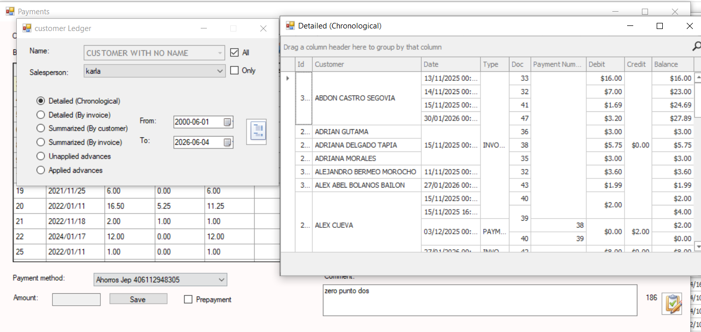
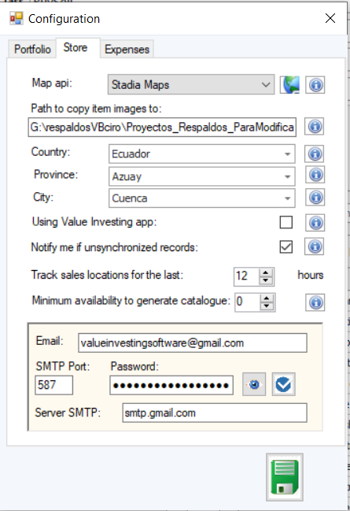

Conçu pour les entreprises en croissance
Ce logiciel a été conçu pour offrir la robustesse habituellement présente dans les systèmes d'entreprise, tout en restant pratique et facile à utiliser. Les organisations peuvent gérer les clients, les fournisseurs, les stocks, les ventes, les achats, les territoires, le personnel sur le terrain, les processus de synchronisation et les rapports opérationnels à partir d'un environnement unifié.
La plateforme intègre des logiciels de bureau, des applications mobiles, des boutiques en ligne et des services de synchronisation, aidant ainsi les entreprises à maintenir des informations précises dans plusieurs environnements.
Transactions de ventes et d'achats
Écran central des transactions utilisé pour enregistrer les ventes, les achats, les factures, les crédits, les débits et les opérations commerciales. Conçu pour une productivité élevée et une efficacité opérationnelle quotidienne.

Avances et règlements
Gérez les avances des clients, les paiements anticipés aux fournisseurs, les règlements de factures, les imputations de paiements et le rapprochement des soldes en attente.

Grand livre client
Historique détaillé des comptes clients affichant les factures, les paiements, les soldes, les crédits, les débits et les mouvements de compte. Offre une visibilité financière complète.

Administration commerciale
Gérez les listes de prix, les structures tarifaires, les commerciaux, les agents d'achat, les territoires commerciaux et les zones de vente.

Grand livre des stocks et contrôle des inventaires
Rapports avancés sur les stocks incluant l'historique des mouvements, les soldes de stock, le suivi des transactions et les capacités d'audit des inventaires.

Centre d'assistance intégré
Plateforme intégrée de demandes d'assistance permettant aux utilisateurs de communiquer directement avec l'équipe de développement, de signaler des incidents et de demander de l'aide.

Catalogue graphique des produits
Catalogue visuel des produits affichant les images, les descriptions, les informations tarifaires et les détails d'inventaire dans un format intuitif.

Configuration du système
Module complet d'administration des paramètres utilisé pour configurer les règles opérationnelles, les politiques de gestion et le comportement du système.

Centre de synchronisation
Transférez et synchronisez les informations entre les systèmes de bureau, les applications mobiles, les opérations sur le terrain et les boutiques en ligne.

Administration des clients et fournisseurs
Gérez les dossiers clients et fournisseurs, les informations de contact, les données fiscales, les conditions commerciales et les informations opérationnelles.

Analyse des distances
Calculez les distances entre les clients, les fournisseurs, les territoires de vente et les emplacements opérationnels afin d'améliorer la planification.

Cartographie de l'équipe commerciale
Visualisez géographiquement les commerciaux, améliorez la gestion des territoires et optimisez les activités sur le terrain.

Administration des villes
Gérez les villes et les données géographiques de référence utilisées dans toute l'application pour la logistique, les rapports et les opérations commerciales.

Clients et fournisseurs géoréférencés
Stockez les coordonnées géographiques des clients et des fournisseurs afin de permettre la cartographie, l'optimisation des itinéraires et l'analyse de proximité.